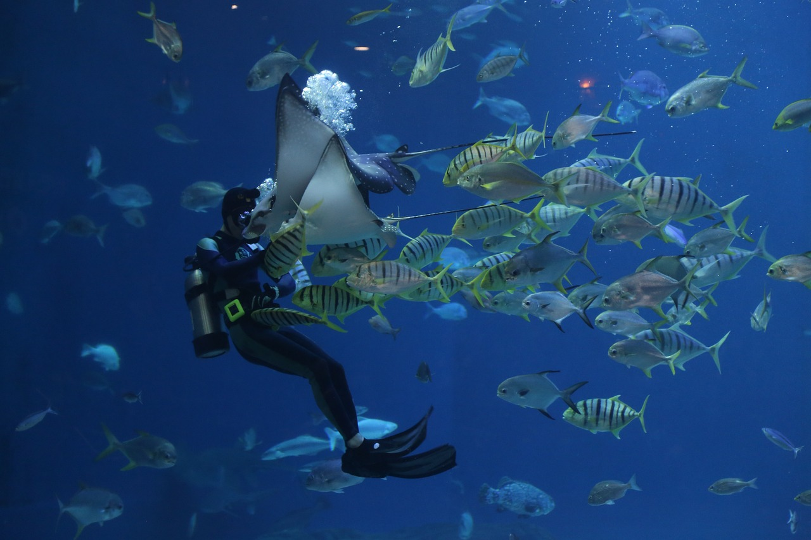
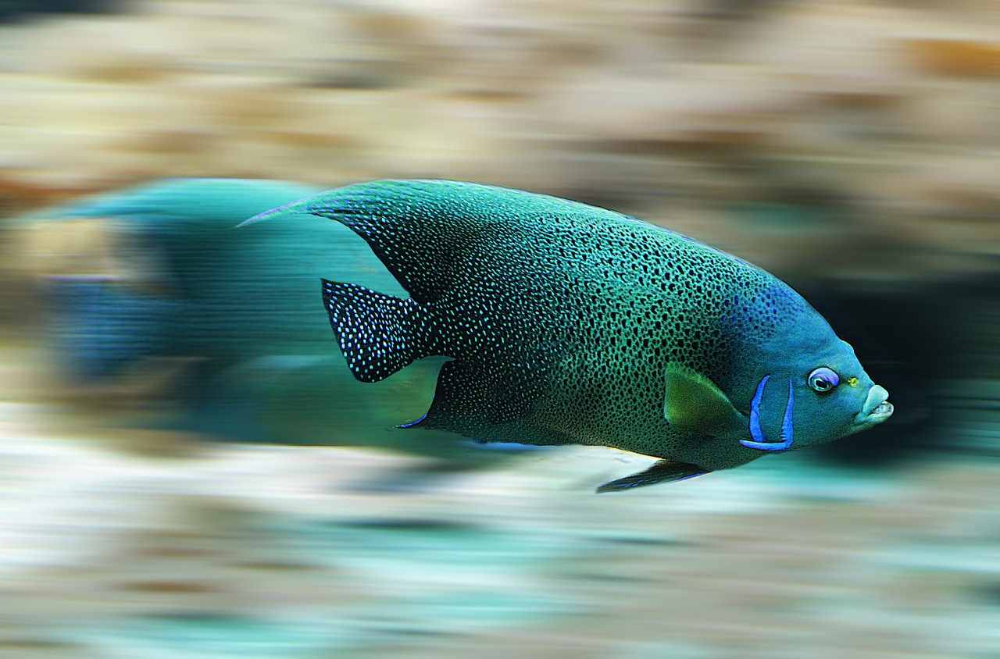

Üçte ikisi sularla kaplı dünyamızda yaşayan canlıların büyük çoğunluğunu oluşturan balıklar, insanoğlu için her zaman vazgeçilemeyen bir varlık olmuştur. Dünya üzerindeki suların ne denli çok olduğu düşünülürse, balık türlerinin de o kadar fazla olması yadırganacak bir durum değildir. Okyanuslarda yaşayan balıklardan derelere hatta su birikintilerine kadar binlerce balık çeşidi vardır. Akvaryumlarla ilgilenen bizler bu zengin çeşit içerisinde çok küçük sayılabilecek bir bölüm ile ilgilenmemekteyiz. Akvaryumlarımızda beslediğimiz balık çeşitleri teknolojinin ilerlemesiyle artmıştır. Bundan 50 yıl önce bir kaç tür balık tanklarda yaşatılabilirken şu an neredeyse tüm balıklar uygunluğuna göre tanklarda bakılabilmekte fakat sitemizin hedef aldığı kesim Türkiye'de ev ortamında bakılan balıklar olduğu için bu kriterlere uygun balıklar anlatılacak ve yaşatma şartları ele alınacaktır.

Astronot balığı, Benekli çöpçü balığı, Cam kedibalığı, Cüce gurami, Cüce vatoz, Diskus, Gökkuşağı balığı, Japon balığı, Kakadu cichlid, Kavgacı Siyam balığı, Kılıçkuyruk, Lepistes, Neon tetra, Plati, Rasbora, Sarı Prenses, Tilapia, Tilapiini, Zebra balığı, Öpüşen gurami ve İnci gurami olarak sıralayabiliriz.

Akvaryum balıkları, özel olarak tasarlanmış akvaryum tanklarında bakılan tatlı su veya tuzlu su balıklarıdır. Bu balıklar, çeşitli renk, şekil ve davranışlara sahip olabilirler. Akvaryum balıkları genellikle süs balıkları, tatlı su balıkları ve tuzlu su balıkları olmak üzere üç ana kategoriye ayrılır.
Süs Balıkları: Bu kategori, genellikle renkli ve dekoratif özelliklere sahip balıkları içerir. Akvaryumları güzelleştirmek ve görsel keyif sağlamak amacıyla tercih edilirler. Örnek olarak neon tetra, guppy, zebra danio gibi balıklar sayılabilir.
Tatlı Su Balıkları: Bu balıklar, tatlı su akvaryumlarında yaşayan ve özellikle tropik bölgelerden gelme eğiliminde olan türleri içerir. Örnek olarak altın balık, cüce gurami, moli gibi balıklar bulunabilir.
Tuzlu Su Balıkları: Tuzlu su akvaryumları, okyanus veya deniz yaşamını taklit etmek amacıyla kurulmuş tanklarda bulunan balıkları içerir. Renkli mercan balıkları, anemon balıkları (örneğin, Nemo), kirpi balıkları gibi popüler tuzlu su balıkları bulunmaktadır.
Akvaryum balıkları için genel bakım şunları içerebilir:
Su Kalitesi: Temiz ve sağlıklı su, balıkların yaşamı için kritiktir. Su filtreleme sistemleri ve düzenli su değişimleri bu konuda yardımcı olabilir.
Isı ve Işık: Balıkların türüne bağlı olarak uygun su sıcaklığı ve ışık düzeni sağlanmalıdır.
Beslenme: Farklı balık türleri farklı beslenme gereksinimlerine sahiptir. Dengeli bir diyet sağlamak önemlidir.
Tank Dekorasyonu: Balıkların gizlenmek, yüzmek ve dinlenmek için kullanabilecekleri uygun dekor ve saklanma yerleri sağlamak önemlidir.
Hastalıklar ve Tedavi: Balıklar hastalanabilir, bu nedenle belirtileri takip etmek ve gerektiğinde uygun tedaviyi uygulamak önemlidir.
Her balık türü farklı ihtiyaçlara sahiptir, bu nedenle bir akvaryum kurmadan önce balıkların özelliklerini ve bakım gereksinimlerini araştırmak önemlidir. Ayrıca, akvaryumda uygun su döngüsü, filtreleme ve ısıtma sistemleri kurmak, balıkların sağlıklı bir ortamda yaşamalarını sağlamak için önemlidir.
Akvaryum balıkları oldukça çeşitli türlere sahiptir, ve her biri farklı renkler, boyutlar, davranışlar ve bakım gereksinimleri sunar.
İşte popüler akvaryum balığı türlerinden bazıları:
Altın Balık (Carassius auratus): Belki de en bilinen ve popüler tatlı su balıklarından biridir. Altın rengi veya diğer renk varyasyonlarıyla gelirler.
Guppy (Poecilia reticulata): Renkli ve canlı olan guppyler, akvaryum hobisinde sıkça tercih edilen tatlı su balıklarındandır. Üreme yetenekleri ile de bilinirler.
Neon Tetra (Paracheirodon innesi): Küçük, renkli ve barışçıl balıklardır. Parlak mavi ve kırmızı renklere sahip olan neon tetralar genellikle sürüler halinde yaşarlar.
Cüce Gurami (Trichogaster lalius): Görsel olarak çekici olan ve oldukça sakin olan cüce guramiler, popüler bir tatlı su balığı türüdür.
Zebra Danio (Danio rerio): Zebra desenli olan bu balıklar, energetik ve hareketli davranışlarıyla tanınırlar.
Moli (Poecilia sphenops): Renkli ve farklı desenlere sahip moli balıkları, genellikle canlı doğuran balıklar olarak bilinirler.
Anemon Balığı (Amphiprioninae): Tuzlu su akvaryumları için popüler olan anemon balıkları, renkli ve ilginç davranışlara sahip oldukları için tercih edilir.
Siyah Tetra (Gymnocorymbus ternetzi): Gri veya siyah renkte olan bu tetra türü, canlı renkleri ve aktif davranışları ile bilinir.
Cichlidler: Cichlid familyası birçok farklı türü içerir ve görsel çeşitlilikleri ile bilinirler. Örneğin, Mbuna cichlidleri, Malawi cichlidleri ve Angelfish (Melek Balığı) gibi.
Betta (Betta splendens): Betta balıkları, uzun yüzgeçleri ve canlı renkleri ile bilinir. Diğer bettalara karşı saldırgan olabilirler, bu nedenle tek başlarına veya diğer sakin balıklarla birlikte tutulmaları önerilir.
Bu sadece birkaç örnek; akvaryum hobisi oldukça geniş bir konsepttir ve farklı türlerin bir arada bulunduğu birçok kombinasyon mümkündür. Balıkları bir araya getirmeden önce, her türün bakım gereksinimlerini ve uyumluluklarını dikkate almak önemlidir.